Kinematic Transport Lifting
Robot-only renderings and masks support camera-aligned image-plane transport from commanded actions. The resulting field conditions future video generation.
Predicting the visual consequences of robot actions with camera-aligned motion and transport-aware training.
Manuscript figures and selected video samples. See the linked repositories for current artifact availability.
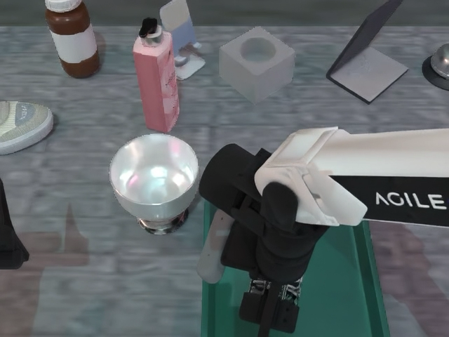
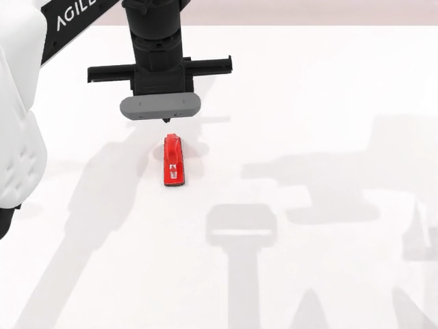
Frames selected from the supplied 1,000-video collection. They are visual samples; their source checkpoint is not specified here.
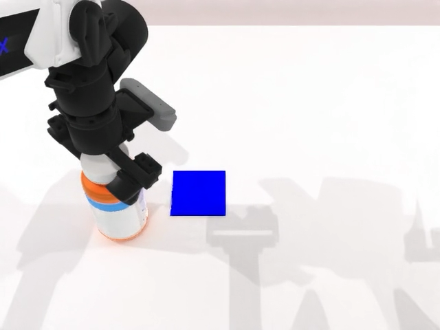
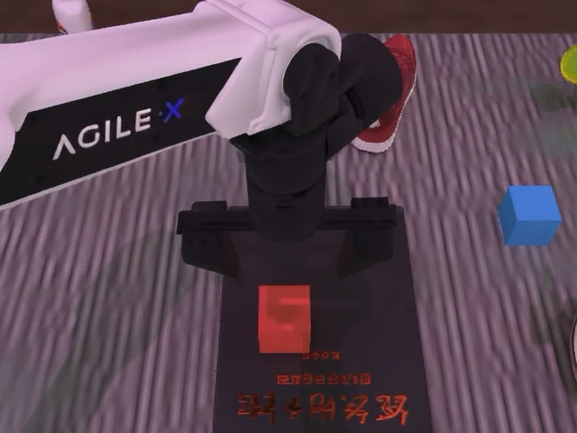
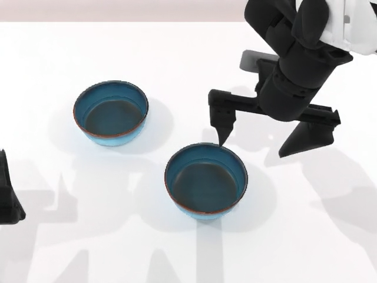
KineWorld uses commanded robot motion to guide video generation and to focus training on regions affected by interaction.
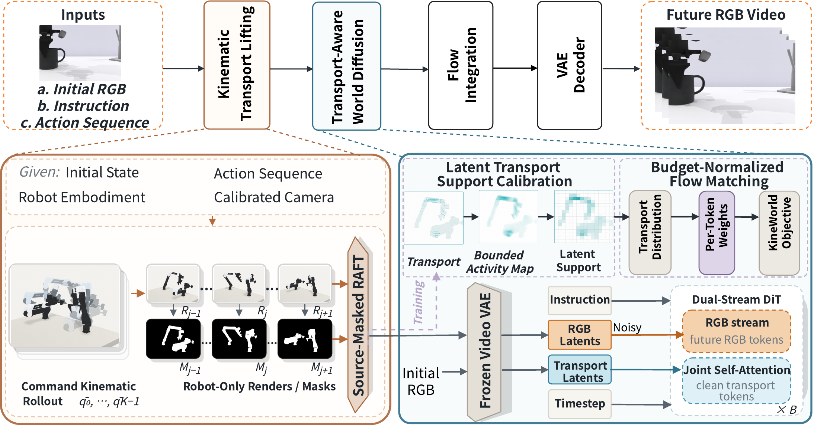
Figure 01 KineWorld framework from the V4 manuscript Open full size ↗Robot-only renderings and masks support camera-aligned image-plane transport from commanded actions. The resulting field conditions future video generation.
Transport support is calibrated on the video latent grid and converted to normalized token weights for future-RGB supervision.
Actions drive robot renderings, transport provides a camera-aligned condition, and the resulting support changes the allocation of future-RGB training loss. The 3D field in this drawing is schematic; KTL estimates image-plane transport with RAFT between rendered robot states.
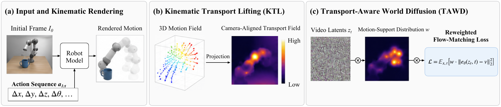
Appendix figure A1 Detailed conceptual pipeline Open full size ↗The manuscript illustration connects robot motion, image-plane transport, and the support used by the training objective. It is a conceptual visualization, not a measured rollout.
Open figure at full size ↗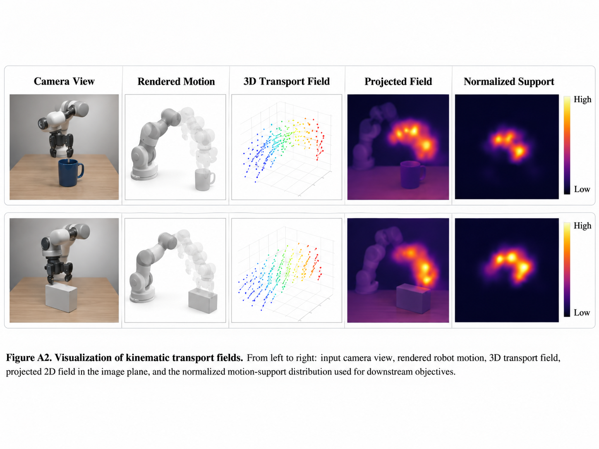
The paper's analytical plots illustrate how a constructed transport support changes token-weight allocation. These curves are illustrative, not measured training statistics.
A retained manuscript figure places a Wan2.2 example and a KineWorld example side by side at sampled times. This visual comparison does not establish a benchmark score or identify the source of the video samples on this page.
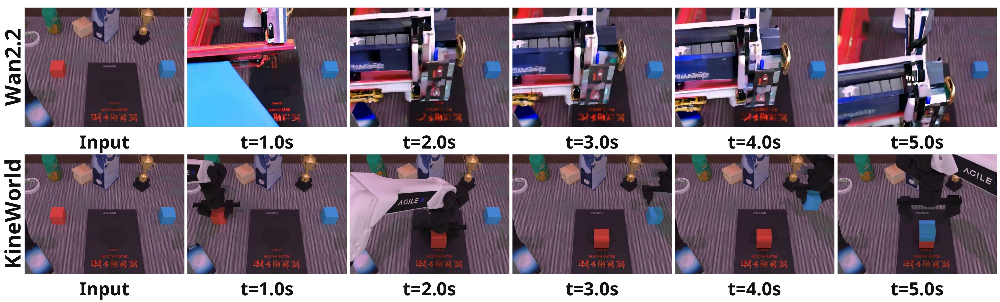
Figure 05 Retained qualitative comparison from the V4 manuscript Open full size ↗The V4 appendix collects 15 single-view episode pairs across three plates. Each pair starts with the decoded input and follows with five sampled future frames, allowing the scene, robot, and objects to be inspected through time.
Episodes 45, 125, 212, 300, and 336 range from simple block layouts to food-handling scenes. Follow the robot's appearance and the position of objects across each six-frame row.
The appendix describes visible rollout behavior; a few examples cannot establish task completion or trajectory accuracy.
Open the full plate ↗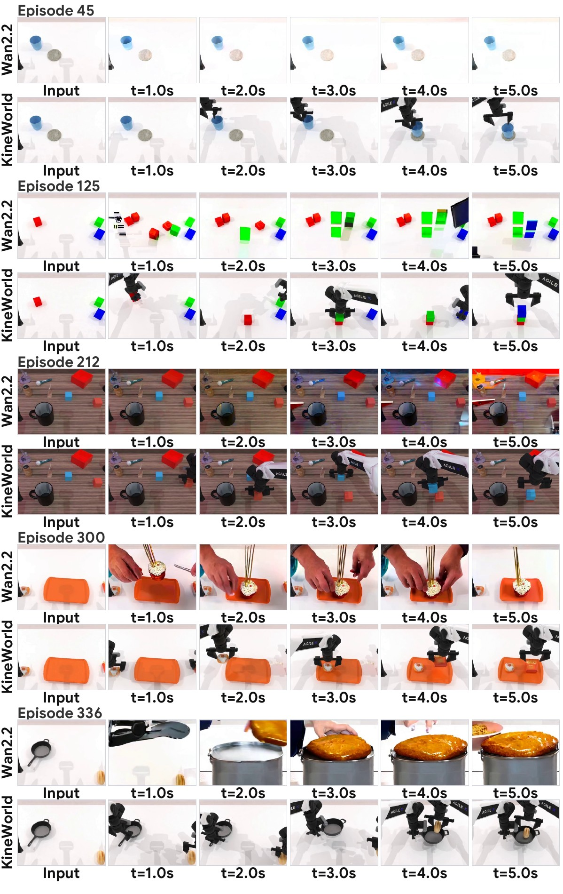
Episodes 45 · 125 · 212 · 300 · 336Episodes 391, 488, 586, 704, and 732 include sparse white tabletops and textured workspaces. Compare what moves, what stays in view, and whether the robot setting remains consistent.
Frames are sampled from each encoded video; the display is a qualitative sequence, not a controlled component comparison.
Open the full plate ↗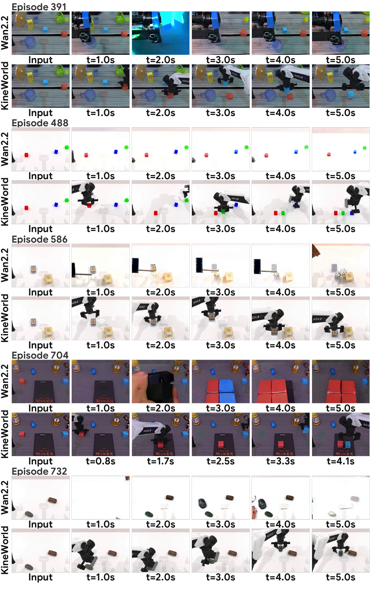
Episodes 391 · 488 · 586 · 704 · 732Episodes 780, 865, 938, 976, and 982 show several different object arrangements and tasks. Look across the five future frames for changes in robot embodiment, object identity, and scene composition.
These are retained manuscript examples. They are separate from the three playable videos on this page and are not attributed to the public step-500 checkpoint.
Open the full plate ↗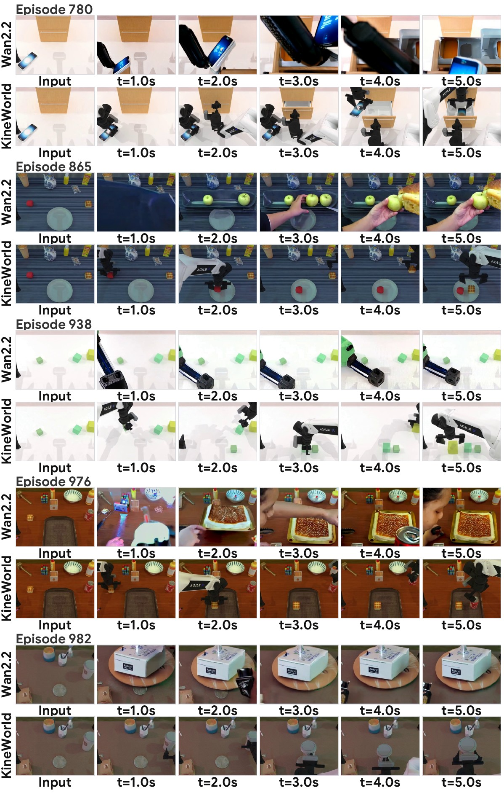
Episodes 780 · 865 · 938 · 976 · 982These V4 appendix plates compare reference and generated frames at eleven shared frame indices. Each plate places the left wrist, head, and right wrist views side by side, exposing where a rollout agrees across views and where it diverges.
Compare the bottle's position during the reference lift with the generated head and left-wrist views. The plate makes differences in close-up object visibility easy to inspect.
Validation diagnostic from the manuscript; not a scored multi-view test result.
Open all eleven rows ↗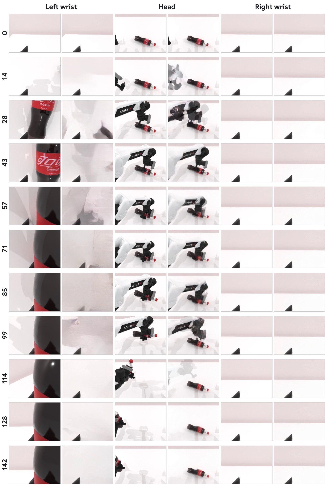
Bottle manipulation · episode 1Follow the food-placement sequence in all three views. The tray contents and wrist-camera detail give concrete places to inspect differences between reference and generated frames.
The views are synchronized for visual inspection; this is separate from the paper's scored test outputs.
Open all eleven rows ↗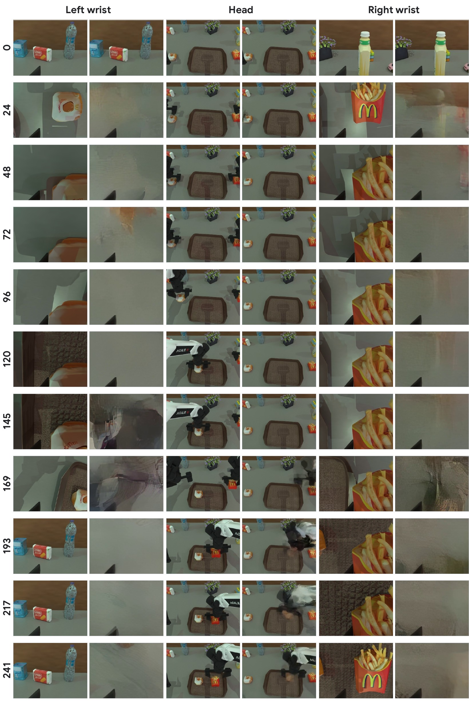
Food placement · episode 50Compare when motion appears in the head view and how objects enter the right-wrist view. The static left-wrist scene provides a useful contrast within the same episode.
A stable background alone is not evidence that object transport agrees across cameras.
Open all eleven rows ↗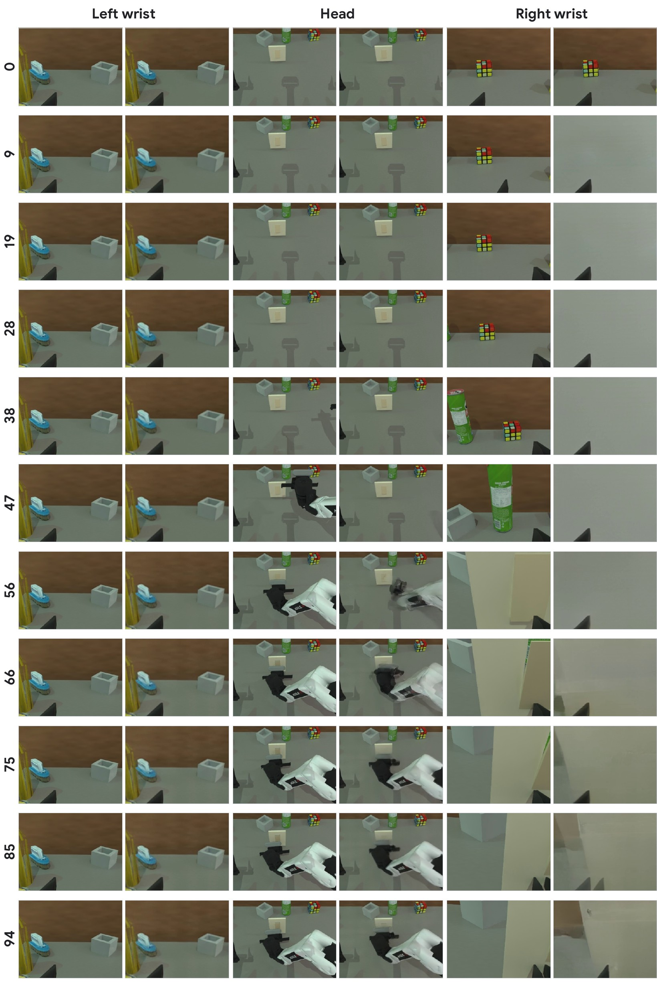
Switch interaction · episode 100Three playable clips from the supplied collection. The complete 1,000-video archive has a separate dataset repository ↗.
Code, model files, and the video collection are published separately. Check each repository for current file availability.
Public source components, setup instructions, and examples.
↗ 02 / ModelModel card, checkpoint, and companion files.
↗ 03 / DatasetDataset card and full video archive.
↗The public source and released artifacts are separate from the full V4 experimental setup. This page makes no numerical benchmark claim or checkpoint attribution for the sample videos. A public manuscript link will be added when available.